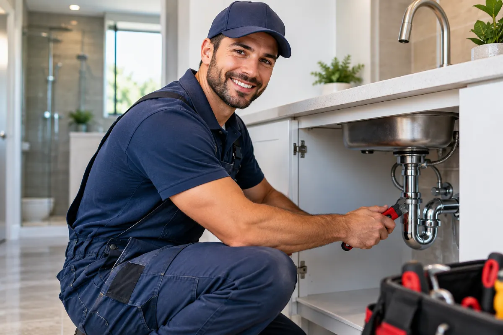

Drain Cleaning in Chicago, IL
Clearing slow, blocked, gurgling, and odor-producing drains across Chicago.
A sink that gurgles after the faucet is off, a tub that holds dirty water around the drain, or a sewer smell near the floor drain usually means water is not moving through the pipe as it should. Grease, soap residue, hair, food waste, scale, and debris can narrow a branch line until the fixture begins draining slowly or sending water back toward the room.
We check the affected fixture, the trap, the drain opening, and any available cleanout to locate where the restriction begins. A blockage close to a sink or shower may be limited to the trap arm, while water backing up through a basement floor drain can point farther down the building drain or sewer line.
A mildly slow sink can usually wait for a planned visit if no water is rising elsewhere. Standing wastewater, a floor drain backup, repeated overflow, or water returning through another fixture should not wait, because a blocked drain line can send contaminated water onto flooring, cabinets, and walls.
Gurgling sinks and drain odors
We hear about sinks that make a gulping sound, showers that fill around the ankles, kitchen basins that empty only after several minutes, and toilets that bubble when a washing machine or nearby faucet drains. A rotten-egg or sewer odor from a bathroom drain can also come from stagnant debris in the trap or from a drain line that is not venting or flowing properly.
A kitchen sink that backs up after dishes, a tub drain clogged with hair, and a floor drain that sends water onto concrete may look similar from the room, but the restriction can be in very different pipe sections. We inspect the fixture and drain route before recommending work, because a trap blockage, grease buildup, root intrusion, and a damaged sewer line require different tools and lead to different repair needs.
Drain camera inspection
At a drain callout, we first run water at the affected fixture and check how quickly the basin, tub, or floor drain clears. We inspect the stopper, strainer, trap, visible drain pipe, and accessible cleanout, then use a cable machine or camera when the blockage is beyond the fixture connection. A basic flow check and access inspection can take about 20 to 40 minutes, while tracing a longer drain line with a camera takes longer depending on the pipe route and cleanout access.
For many sink, shower, and floor drain clogs, we can clear the line through the drain opening or cleanout during the same visit. We may remove packed hair, soap buildup, grease, or debris from a trap, and we can replace a damaged trap washer or cleanout cap when inspection shows it is needed. If the camera shows a collapsed pipe, roots in a buried line, or a section behind a finished wall, we explain the location and arrange separate work rather than opening walls or excavating without a defined scope.
Pipe access and blockage depth
The fixture involved, the pipe material, and the distance to the blockage all affect the work required. A sink trap under an open cabinet is generally simpler to reach than a cleanout behind drywall, under a finished basement ceiling, or in a locked utility room. Grease in a kitchen branch, scale inside older cast iron, and roots in an exterior sewer line also call for different cleaning methods and inspection steps.
Access to a working cleanout can reduce the need to work through a fixture drain, while a seized cleanout plug or corroded pipe may need careful removal before the line can be cleaned. A camera inspection may be needed when a blockage returns or when water backs up at more than one fixture. If a building manager, condominium association, or city requirement calls for approval or sign-off before work on a shared drain line, that coordination can also change the scope.
Fixture location and cleanout access
Before calling, note which fixture is slow or backing up, such as the kitchen sink, second-floor tub, laundry standpipe, or basement floor drain. Tell us whether another sink, toilet, or shower causes the affected drain to gurgle or fill, since that helps us narrow the shared pipe route. If you know where the cleanout is located, such as beside the water meter, near the basement floor drain, or outside the building, let us know whether it is accessible. Mention any recent drain chemical, disposal use, grease spill, renovation debris, or repeated clog, because those materials can affect the cable and camera work. Call us at (847) 809-2341 before wastewater reaches the floor, since a drain backup can spread farther through the room as the pipe remains blocked.
Hours of operation
| Monday | Open 24 hours |
| Tuesday | Open 24 hours |
| Wednesday | Open 24 hours |
| Thursday | Open 24 hours |
| Friday | Open 24 hours |
| Saturday | Open 24 hours |
| Sunday | Open 24 hours |
Not what you were after? Go back to the home page or water heater repair.